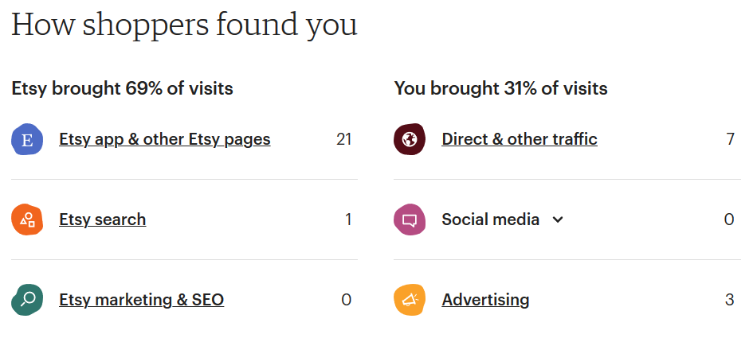
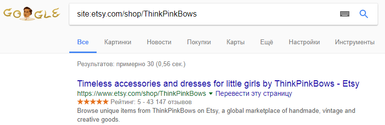
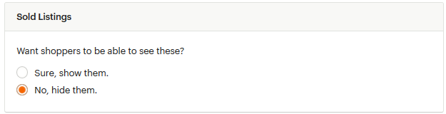
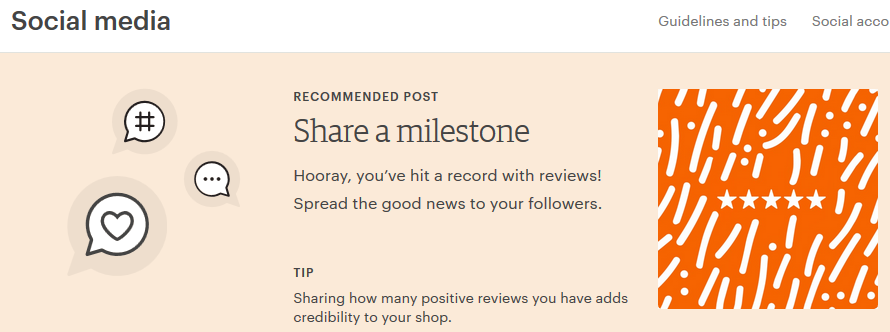
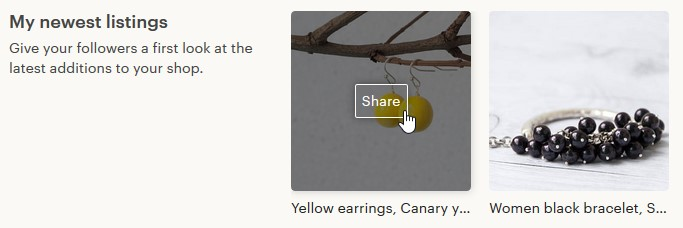
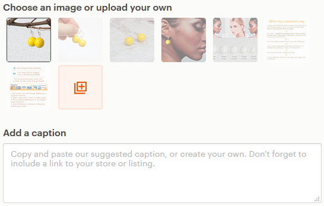

Что такое команды (Teams) на Etsy и зачем они нужны
Команды – это раздел на Этси (Shop Manager – Community and Help – Teams),
где общаются друг с другом в основном продавцы (и иногда, покупатели).
https://community.etsy.com/t5/Etsy-Teams/ct-p/teams
Участники команд делятся информацией о ведении бизнеса в своём го-
роде/стране, дают советы и получают их от более опытных участников, а также
просто общаются на наболевшие темы. Также в командах зачастую организу-
ются игры, вроде фаватонов/кликатонов и т.п.
Участником команды можно стать автоматически, подписавшись на неё, или по-
дав заявку, которую рассмотрит Капитан команды.
Форум Etsy
Форум Этси – это отличная возможность найти ответ на возникший вопрос, а
также просто побеседовать с такими же, как и мы, продавцами – у которых
точно такие же проблемы (Shop Manager – Community and Help – Forums).
https://community.etsy.com/t5/Etsy-Forums/ct-p/forums

На форуме есть несколько разделов:
• Announcements — объявления Этси о важных изменениях на сайте
• Etsy Success — вопросы админам Etsy и их ответы
• Creative Process — здесь можно обсудить всё, что связано с созданием то-
варов (дизайн, материалы, техники, рабочее место, оборудование)
• Managing Your Shop — открытие и развитие магазина (о работе мобильных
приложений, платные подписки Etsy, продажи в оффлайне)
• Photography Tips — советы по фотографиям (свет, съёмка, обработка и
прочее)
• All Things Finance — какую цену поставить своим товарам, как вести буху-
чёт и платить налоги
• Marketing Your Business — о продвижении магазина на Etsy и за его пре-
делами (обсуждение SEO, работы поиска, статистики магазина, соцсетей,
рекламы, распродаж и т.п.)
• Providing Great Customer Service — общение с покупателями (как их удивить
и обрадовать, как общаться в личных сообщениях, работы под заказ, воз-
враты и обмены)
• All About Shipping — отправка заказов
• Shop Critiques – здесь можно спросить совета других продавцов о том, что
улучшить в своём магазине
• Technical Issues — если возникла ошибка на сайте, то можно написать
сюда (но ответят вам только другие участники форума, а не админы)

Какие есть рассылки Etsy и как на них подписаться
У Этси есть много email рассылок для продавцов. На большинство из них можно
подписаться (или отписаться) из личного кабинета на странице You – Account
settings – Emails.
https://www.etsy.com/your/account/email
Как узнать, показываются ли мой магазин и товары в Google
Чтобы узнать, находят ли ваш магазин или товары через Google, необходимо
зайти в статистику магазина (Shop Manager – Stats).
How shoppers found you – это источники переходов, то есть откуда заходили в
ваш магазин.


Для просмотра переходов из поисковых систем, нажмём Etsy marketing & SEO.
На открывшейся странице дойдём до пункта Traffic source breakdown.
Напротив строки www.google.com указана цифра 11 – то есть за выбранный
период времени в магазин из англоязычного поиска Гугл перешли 33 раза.
Ещё 5 переходов было из немецкого google.de.
Чуть ниже находится раздел Search terms – список ключевых слов, по которым
люди находили магазин через поисковые системы.
Помимо этого, вы можете ввести в поиск Google следующую фразу:
site:etsy.com/shop/название_вашего_магазина
Например: site:etsy.com/shop/ThinkPinkBows


Так вы узнаете, видит ли главную страницу вашего магазина Google.
То же самое можно сделать с конкретным товаром:
site:etsy.com/listing/номер_товара
Например: site:etsy.com/listing/509192483/
Как сделать красивую ссылку на магазин
Есть 2 варианта написания веб-адреса вашего магазина:
1) etsy.com/shop/CreatingUnkamen
2) CreatingUnkamen.etsy.com
Они оба равнозначны. Перейдя по второй ссылке Etsy автоматически перебро-
сит вас на первый вариант.
Как продавать на Etsy оптом
Долгое время на Etsy был специальный раздел, посвященный оптовым прода-
жам – Etsy Wholesale.


Но в июле 2018 года его закрыли. Теперь продавать оптом необходимо напря-
мую на самом сайте Etsy.com, договариваясь об условиях в личной переписке.
Что такое admirers и followers и чем они отличаются
Admirers – люди, которые подписаны на ваш магазин. Они видят у себя на глав-
ной странице обновления, которые у вас происходят.
Узнать количество подписчиков магазина можно на его главной странице – под
списком категорий/секций.
Followers – это люди, которые подписаны лично на вас (а не на магазин).
Можно ли отправлять сообщения людям, которые добавили
в избранное мои товары или магазин
Да, такая возможность есть – на Этси вы можете отправить личное сообщение
любому пользователю.
Но если вы и решите так поступать, то стоит делать это с большой осторожно-
стью – человек может расценить ваше сообщение как спам и пожаловаться на
вас Этси. А спам на площадке не приветствуется.
Но можно отправлять специальные купоны Recently Favorited — это абсолютно
легально и не нарушает правил площадки.
В какой момент стоит нанимать помощника
Если вы чувствуете, что магазин занимает у вас слишком много времени – то
можно подумать о том, чтобы нанять себе помощника.
Можно отдать ему ту работу, которая меньше всего вам нравится или отнимает
больше всего времени. Например, походы на почту или закупку материалов.
Главное посчитайте, будет ли это для вас выгодно. Если в освободившиеся
время вы можете сделать что-то, что принесёт магазину дополнительную при-
быль – то это будет отличное вложение.
У меня цифровые товары. Покупатель просить изменить раз-
мер/цвет в файле. Стоит ли брать за это деньги
Всё зависит от того, сколько времени у вас это займёт. Если минут 5-10, то мо-
жете сделать бесплатно. Если же требуется поработать достаточно долго, то ко-
нечно стоит просить дополнительную плату.
Плюс от такого редактирования в том, что вы можете выложить получившийся
результат как новый листинг – вдруг кому-то ещё понравится такой вариант, и
он его купит. В результате ваша бесплатная работа окупится.
Какие дни недели самые активные на Etsy
По моим наблюдения – это выходные, с субботы по воскресенье. В это время у
меня больше всего просмотров и продаж.
После выходных обычно спад – особенно в середине недели, в среду-четверг.
Но у разных магазинов эта статистика может быть разной.


Какое время дня самое активное на Etsy
Так как основная аудитория Etsy – это жители США, то пик посещаемости при-
ходится на то время, когда там день.
Узнать часовую разницу между вашим городом и, например, Нью-Йорком,
можно на различных сайтах. Я для этой цели использую
https://yandex.ru/time
Можно ли закрыть в магазине раздел проданных товаров
Да, это можно сделать. Для этого зайдите в меню Shop Manager – Settings – Op-
tions и в самом низу в разделе Sold Listings выставите значение No, hide them.
После этого посетители вашего магазина (включая конкурентов) не смогут уви-
деть, что вы продали – ссылка на эту страницу пропадёт.

Как скрыть магазин от покупателей из определенных стран
На Etsy это сделать невозможно. Ваши товары видят абсолютно все посетители
сайта.
Что такое Social Media
В мобильном приложении для продавцов и на сайте Etsy есть инструмент Social
Media (Marketing – Social media). C его помощью можно упростить наполнение
своих аккаунтов в социальных сетях.
Чтобы начать с ним работать, сначала необходимо подключить к Etsy ваши со-
циальные сети (Marketing –Social media – Social accounts). На настоящий момент
доступны Facebook, Pinterest, Twitter и Instagram.
С помощью Social media вы можете рассказать в соцсетях:
• о своих товарах (например, о новинках)
• о важных событиях в жизни магазина (например, 100-я продажа)
• о скидках, купонах и распродажах
• о новом 5-звёздочном отзыве
• о других продавцах, которые вам нравятся
Например, чтобы разместить в соцсетях информацию о новом товаре, нажмите
кнопку Share на нужной фотографии.


Затем выберите подходящую фотографию и напишите текст в поле Add a caption
(можно взять тот, что предлагает сам Etsy – Start with this caption).
На следующем шаге выберите подходящую социальную сеть и нажмите Post and
continue, а затем Done. Несколько кликов – и пост для соцсетей готов!
Что такое Etsy Plus
Это платный тариф для продавцов, который даёт дополнительные возможности
и настройки магазину.
Стоимость Etsy Plus составляет 10 долларов.
Чтобы подключить платный тариф, необходимо перейти на страницу Settings —
Your subscription и нажать кнопку Upgrade.